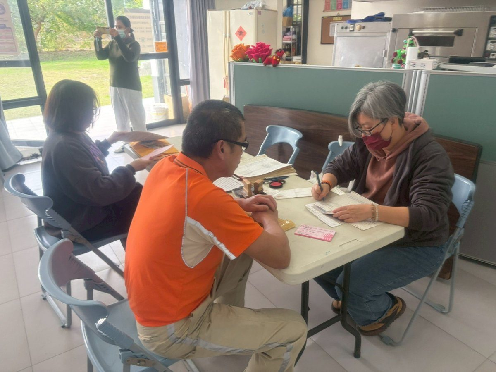
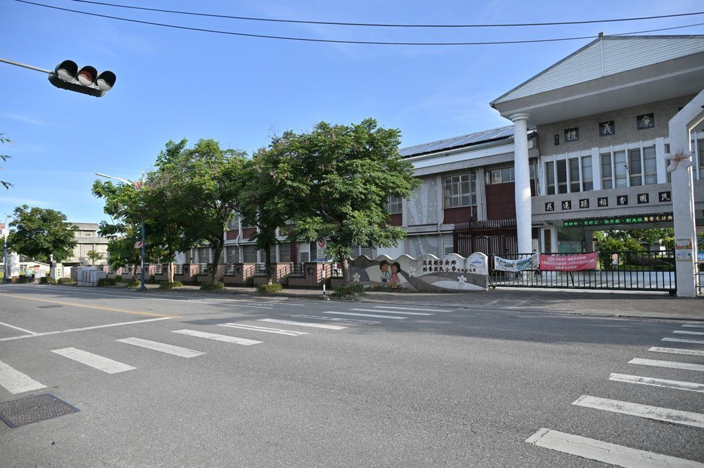
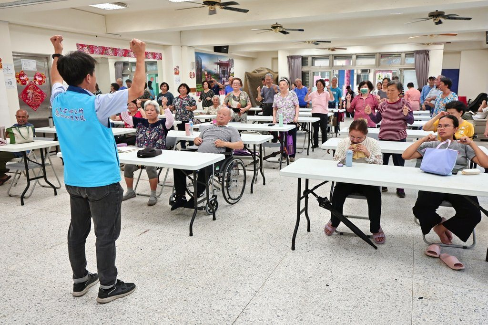
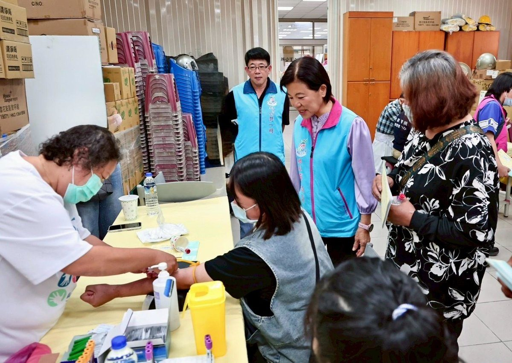
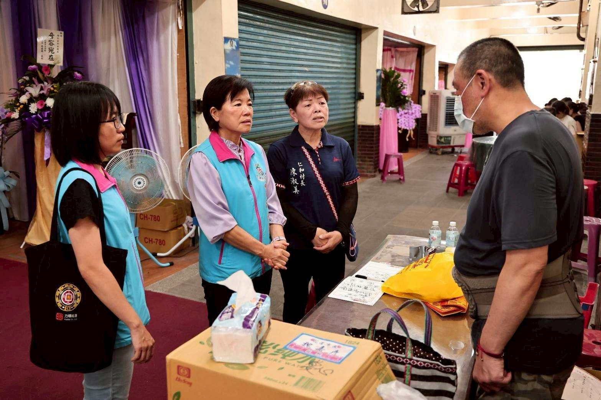
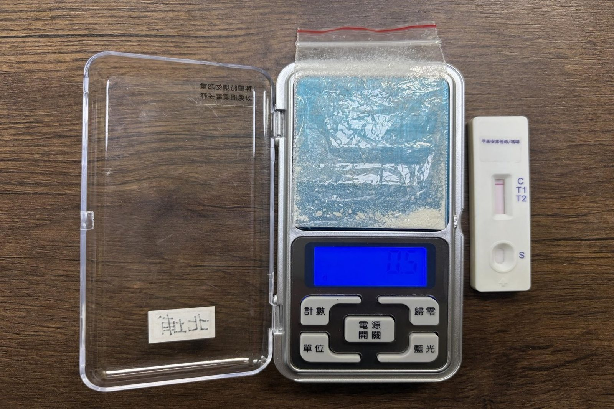
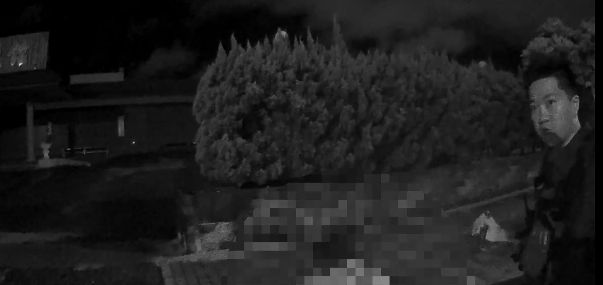
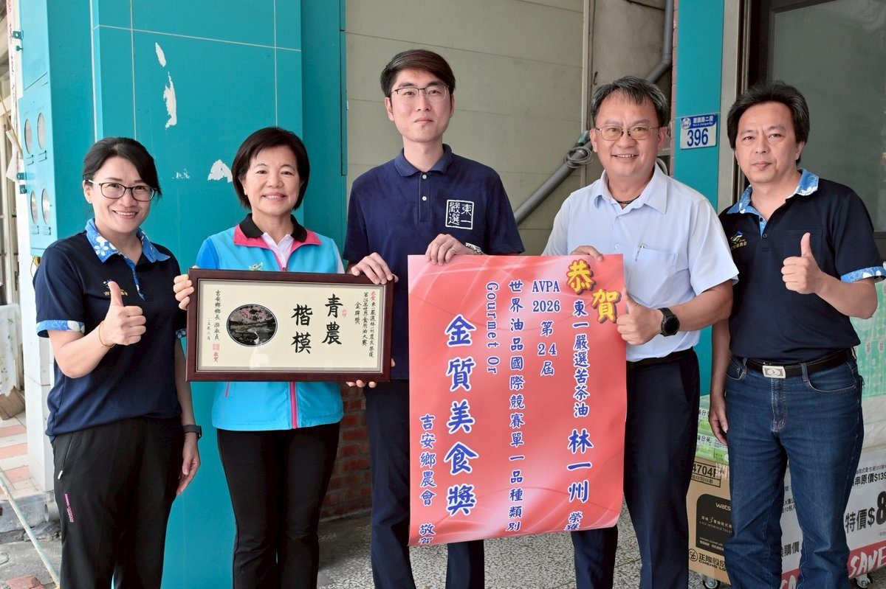
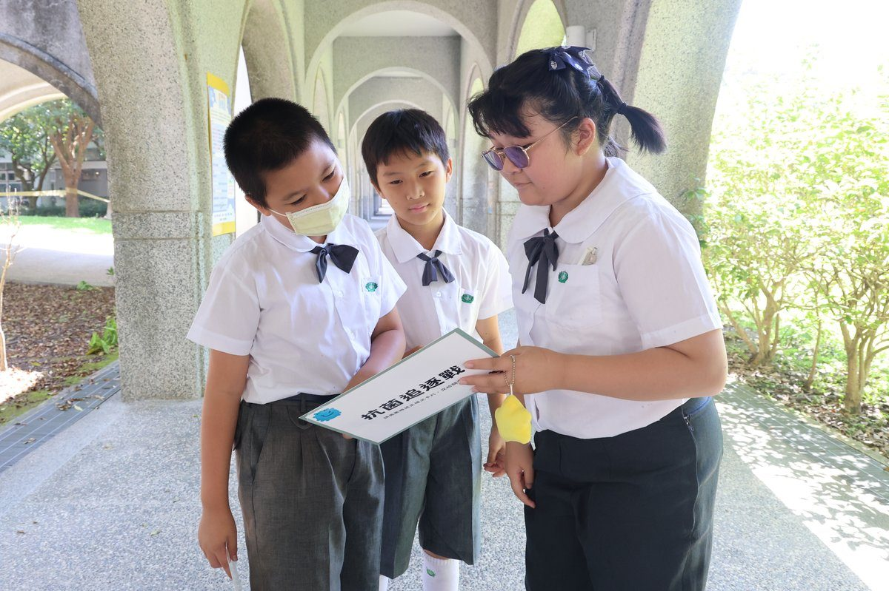

見證花蓮醫療新里程 慈濟攜手博太生醫打造本土失智症研發生態系
可樂電子報小編/編輯 面對高齡社會來臨及失智症人口快速增加的挑戰，花蓮慈濟醫院與博太生 […]…
閱讀全文 →可樂電子報小編/編輯 面對高齡社會來臨及失智症人口快速增加的挑戰，花蓮慈濟醫院與博太生 […]…
閱讀全文 →可樂電子報小編/編輯 吉安鄉公所持續落實弱勢照顧，近期陸續接獲多起鄉民因家屬離世陷入生 […]…
閱讀全文 →可樂電子報小編/編輯 為深化國際藝文連結、推動地方文化走向世界，花蓮縣小路城鄉美學交流 […]…
閱讀全文 →可樂電子報小編/編輯 滅火器操作、CPR按壓、AED電擊——近百名吉安鄉清潔隊員放下日 […]…
閱讀全文 →
可樂電子報小編/編輯 為維護優質農地資源，促進地方特色作物發展與農業永續經營，吉安鄉公所配合中央推動「農糧產業 […]…
閱讀全文 →
可樂電子報小編/編輯 花蓮吉安鄉公所於23日在稻香國民小學崇她館，盛大舉辦「花蓮縣吉 […]…
閱讀全文 →可樂電子報小編/編輯 花蓮吉安鄉公所長期深耕體育教育與全民運動，各項推廣成果斐然。今 […]…
閱讀全文 →可樂電子報小編/編輯 為深入了解臺灣「全人照護元年」的推動成果，多位美國州政府衛生高層 […]…
閱讀全文 →可樂電子報小編/編輯 為積極強化民眾防空避難應變能力及提升全民防衛意識，花蓮縣秀林鄉公 […]…
閱讀全文 →可樂電子報小編/編輯 吉安鄉長年推動健康優質休閒活動，攜手美琪歡樂歌舞協會盛大辦理「1 […]…
閱讀全文 →
可樂電子報小編/編輯 花蓮吉安鄉積極推動「在地人照顧在地人」理念，持續建構完善的社區照 […]…
閱讀全文 →
吉安鄉潔淨家園成果屢獲中央與地方肯定，無懼風吹日曬、默默守護街道巷弄整潔的清潔隊員，更是維護環境品質的重要功臣 […]…
閱讀全文 →現代人手機不離身，連上廁所也要抓緊時間滑影片、讀文章，卻不知這個「馬桶配手機」的習慣，正悄悄引發難以啟齒的「菊 […]…
閱讀全文 →
可樂電子報小編/編輯 吉安鄉長游淑貞長期關懷弱勢家庭，24日上午在鄉公所社會課團隊及仁 […]…
閱讀全文 →可樂電子報小編/編輯 吉安鄉公所為表揚語文競賽表現優異的學生及辛勤指導的教師，23日在 […]…
閱讀全文 →
可樂電子報小編/編輯 花蓮縣警察局新城分局持續強化轄區治安維護及交通安全工作，於115 […]…
閱讀全文 →
可樂電子報小編/編輯 花蓮縣警察局新城分局員警本月13日執行事故防制勤務，於中央路四段 […]…
閱讀全文 →
可樂電子報小編/編輯 花蓮農業實力再度揚名海外！來自花蓮的百大青農林一州，以其精心淬鍊的頂級苦茶油，一舉擊敗各 […]…
閱讀全文 →
可樂電子報小編/編輯 暗夜惡火無情，人間處處有溫情。花蓮縣卓溪鄉卓清村日前發生嚴重住宅火警，造成多戶家庭無家可 […]…
閱讀全文 →
可樂電子報小編/編輯 近年來超級細菌與抗藥性問題日益嚴重，為將正確防疫與用藥觀念向下扎根，花蓮慈濟醫院感染管制 […]…
閱讀全文 →